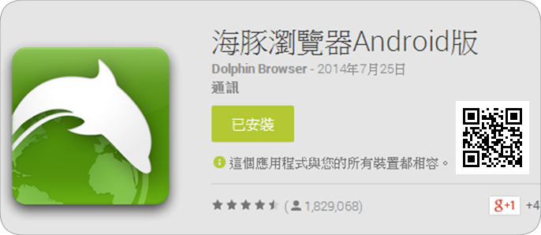
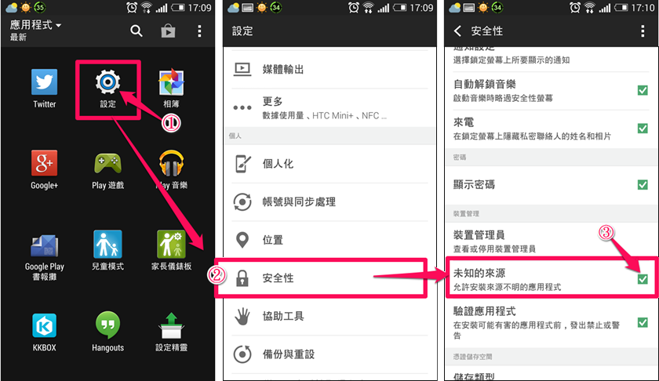
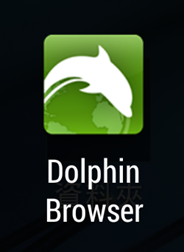
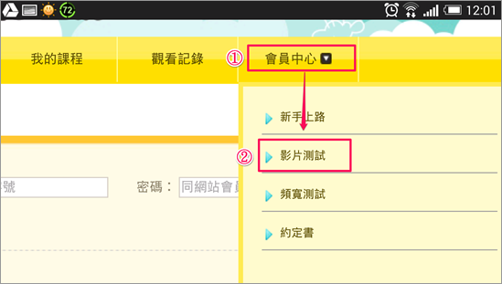
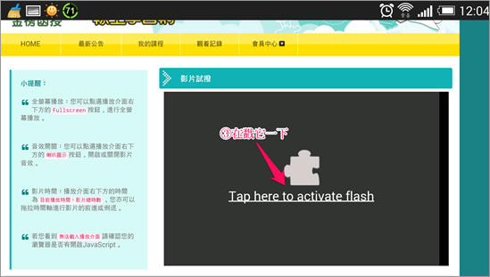
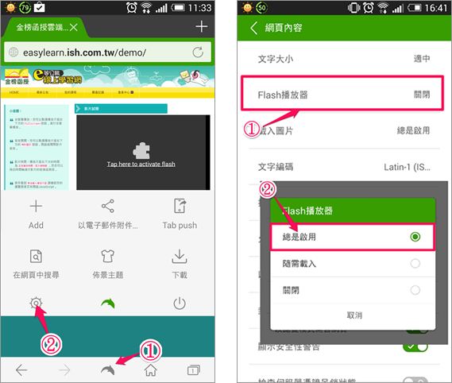

金榜函授的e 等線上學習網的線上課程，考量到老師版書清晰度及學習成效，主要是針對 PC 使用建置，並不建議使用手持式裝置觀看。如您需要以 Android 平版觀看，並不保證可以順利撥放，請您自行評估。若還是需要以 Android 平版觀看，請先安裝另外一套網頁瀏覽器- Dolphin Browser 海豚瀏覽器

2. 下載安裝Dolphin Jetpack3. 下載安裝 Flash Player APK
1. 從應用程式中點選 "設定" 後點選 "安全性" 將 "未知的來源" 打勾

2. 若已安裝 Flash Player，請解除安裝後再重新安裝修改版 Flash Player
3. 開啟海豚瀏覽器 App，網址輸入http://easylearn.ish.com.tw/ 進入金榜函授e 等線上學習網

4. 點選 "會員中心" 下拉選單點選 "影片測試"

5. 點擊 "播放畫面"

若依舊無法播放
點選海豚瀏覽器的"設定" 進入 "網頁內容" 將Flash 播放器設定為選"總是啟用"
